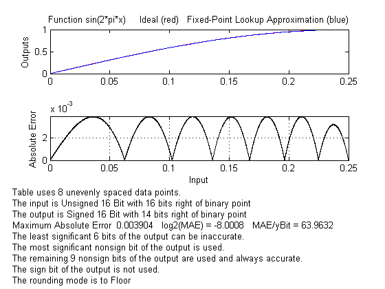
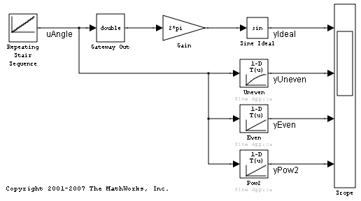
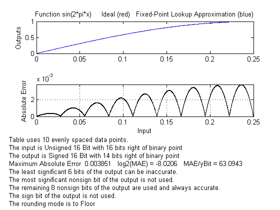
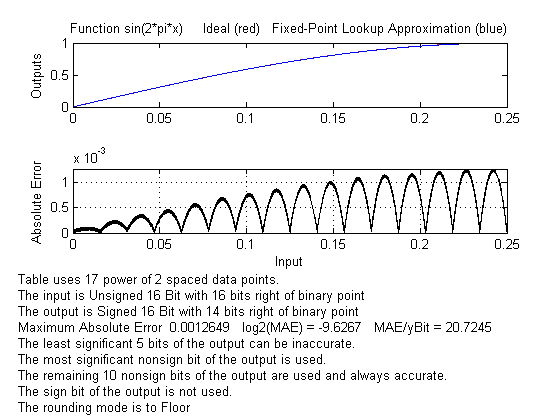

Fixed-Point Function Approximation
Fixed-point applications often need to approximate a function for which there is no fixed-point library function available. Instead, an interpolated look up table is typically used to store an approximation of the function over a specified range. These function approximation scripts are available to automate this task:
fixpt_look1_func_approx.m fixpt_look1_func_plot.m
Contents
Introduction
The general goal of this demo is to find an approximation to the following ideal function:
y = sin(2*pi*x)
over an input range [xmin,xmax]. The approximation uses a lookup table approach and is implemented in fixed-point math. In this example, the input has data type ufix(16) and scaling 2^(-16). The output has data type sfix(16) and scaling 2^(-14). Rounding operations are towards Floor.
A specific goal is to have the approximation accurate to 8 bits to the right of the binary point. In other words, the worst case error should be less than 2^(-8).
Many sets of lookup table data points would meet this goal. Different implementations can be chosen depending on other goals such as memory usage and speed of computation.
The function fixpt_look1_func_approx() can be used to find a solution that meets the goal with a minimal number of data points.
xeven = [1 2]; yeven = [1 2]; xpow2 = [1 2]; ypow2 = [1 2]; funcStr = 'sin(2*pi*x)'; xmin = 0; xmax = 0.25; xdt = ufix(16); xscale = 2^(-16); ydt = sfix(16); yscale = 2^(-14); errMax = 2^(-8); nPtsMax = 21; rndMeth = 'Floor'; format long [xuneven,yuneven] = fixpt_look1_func_approx(funcStr,xmin,xmax,xdt,xscale,ydt,yscale,rndMeth,errMax,[]) %#ok<NOPTS>
xuneven =
0
0.062469482421875
0.102188110351563
0.136093139648438
0.167068481445313
0.196426391601563
0.224807739257813
0.250000000000000
yuneven =
0
0.382506273649438
0.598851963038727
0.754635494518213
0.867284980781863
0.943878806632912
0.987498645602542
1.000000000000000
Plotting the Approximation and Associated Error
The function fixpt_look1_func_plot can be used to view this approximation.
fixpt_look1_func_plot(xuneven,yuneven,funcStr,xmin,xmax,xdt,xscale,ydt,yscale,rndMeth);
The bottom of Figure 1 indicates that this approximation uses unevenly spaced breakpoints which requires a fairly data-intensive implementation.
Using the Approximation in a Simulink® Model
This approximation can be placed directly in a Simulink® Lookup Table (n-D) block. The model below uses not only the above approximation but also the next two implementation variants of the approximation that will be developed below.
open_system('fxpdemo_approx')
 Optimizing for Speed with Evenly Spaced Breakpoints
A more streamlined implementation can be obtained if the breakpoints are evenly spaced.
[xeven,yeven] = fixpt_look1_func_approx(funcStr,xmin,xmax,xdt,xscale,ydt,yscale,rndMeth,errMax,[],'even');
fixpt_look1_func_plot(xeven,yeven,funcStr,xmin,xmax,xdt,xscale,ydt,yscale,rndMeth);
 The bottom of Figure 2 indicates that more data points were required for the evenly spaced case to achieve the same worst case error limit.
Optimizing for Speed: Power-of-2 Spaced Breakpoints
An even more streamlined implementation can be obtained if the breakpoints are required to be evenly spaced by a power of 2. This is because computations are performed using arithmetic shifts instead of multiplies.
[xpow2,ypow2] = fixpt_look1_func_approx(funcStr,xmin,xmax,xdt,xscale,ydt,yscale,rndMeth,errMax,[],'pow2');
fixpt_look1_func_plot(xpow2,ypow2,funcStr,xmin,xmax,xdt,xscale,ydt,yscale,rndMeth);
 The bottom of Figure 3 indicates that even more data points were required for the power of 2 spaced case to achieve the same worst case error limit.
Summary
The ideal function and the three approximations are used in the model fxpdemo_approx. If you have Real-Time Workshop® installed, code can be generated for the above model. If inline parameters is ON, the generated code will show the large efficiency differences in the implementation of unevenly spaced, evenly spaced, and power of 2 spacing.
sim('fxpdemo_approx')